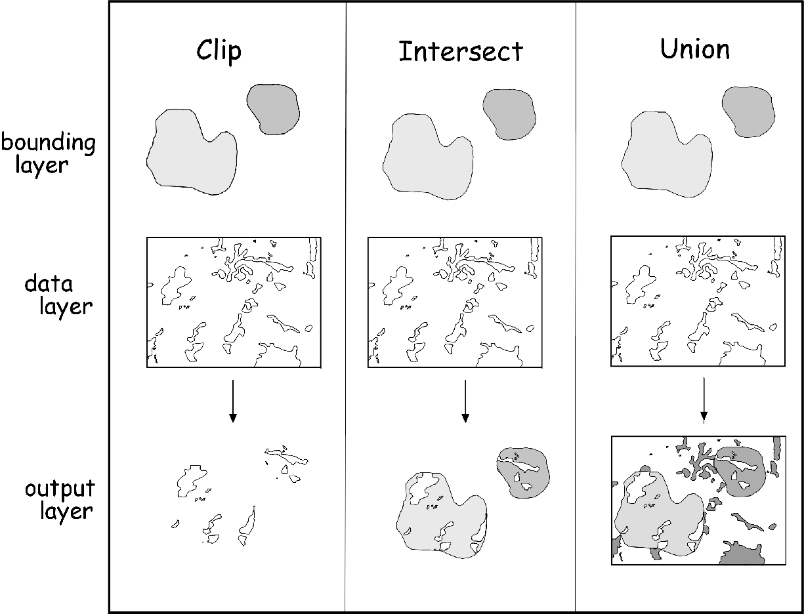

Spatial overlays combine information from two or more maps, and are
fundamental GIS operations. Overlaying maps allows the associations
between two different characteristics of the landscape to be evaluated.
Spatial overlays are also important in developing GIS models, like the
ones you will be constructing for the lab project this semester. For
example, we may be interested in finding all of the coastal sage-scrub
within the Escondido city limits, or in finding vegetation that falls
within 100 m of a stream, or in finding all of the north-facing slopes
that are above 1000 m elevation. In each case, we would need to use the
information in two different data layers in order to arrive at our desired
outcome, and overlays provide the needed tools.
Both vector and raster data can be overlaid, but the procedure is quite different for each. We'll learn both today.
Fundamentally, overlays are set operations, equivalent to logical "and", "or", and "not". The basic operations we will be working with are:

Clip - The intersection of two layers is found, but only the features in one layer is retained (the other acts as a "cookie cutter"). This is a logical "and" operation, because in the end only parts of features that are common to both layers are kept.
Intersect - The intersection of two layers is found, and the overlapping regions of both layers are retained and merged into a new layer. Both the lines that define the polygons and the attribute tables are merged. Intersection is also a logical "and" operation.
Union - All features and attributes, both overlapping and non-overlapping, from two layers are merged into one. This is a logical "or" operation, because in the end all of the features that occur in either map are kept.
Erase - Similar to "clip" in that information from only one layer is retained, but the overlapping region between layers is deleted rather than saved (not illustrated above). Only information from the first layer is retained. This is a logical "not", because only parts of features that do not overlap with the bounding layer are retained.
What does it mean for features and attributes of two files to be retained? Consider this example:
This illustration shows how an overlay will merge both the geometry of the polygons, and the attribute table in the output file. Union and intersect operations differ when the outer boundaries of the layers are different, but here the outer boundaries for Layer 1 and Layer 2 are the same; either an intersection or a union would give us the same result in this case.
The interior lines that define the features are different in the two different layers. Layer 1 has data on the vegetation type ("Veg Type"), and Layer 2 has data on soils ("Soils"). When these layers are overlaid, the lines forming the polygons are combined, and new polygons are formed in the output layer by combining the lines from each and then forming new polygons from them. Each one of these new polygons had a "Veg type" in Layer 1, and a "Soils" type in Layer 2, and thus the output attribute data now gives the attributes on both of these variables. Each new polygon in the output layer is delineated based on the combination of vegetation type and soil type, which changes the geometry of the polygons.
We tend to keep raw data layers as simple as possible, and to represent as few different "themes" as possible with them, and only combine them when we need to. For example, in the illustration above, having vegetation type and soil type separate makes it maximally easy to map vegetation polygons without having them split by the underlying soil type - if all we wanted to do was to map vegetation then it's not desirable to have the patches of CSS and chaparral divided into two because of the underlying soils. Likewise, if we wanted to measure the average size of patches of vegetation like we did last week, the underlying soil type is irrelevant, and having our vegetation maps broken up by soil type would give us polygons that are too small.
However, if we want to answer a question about the relationship between vegetation and soils, or if we want to identify all of the CSS that has loamy soils, then we need to combine the maps. So, generally it's best to have basic data layers represent just one type of data (one "theme"), and combine them only when one is answering a question that requires them to be combined.
One of the primary uses of overlays is to build GIS models. A GIS model is simply a map that represents the areas that meet a set of conditions. For example, riparian vegetation near stream courses is potentially ecologically interesting - it is often made up of different plant species than upland areas, it prevents soil erosion, and can filter sediment and pollutants from rainwater runoff.
So, to build this GIS model we need to 1) buffer the streams by 500 m (which you already know how to do), and then 2) clip the vegetation with your stream buffer (which is new to you today).
Remember to work on the C: drive of the virtual desktop, not of the computer you're working on, and not on the H: drive. You can back up all your files to H: at the end of the day, but these operations will go extremely slowly if you try to work directly on H:.
1. Buffering streams. Add the layer "Streams.shp" to your project, and open the "Arc Toolbox". Find "Analysis Tools" → "Proximity" → "Buffer". Double-click to launch the tool.
2. Clipping the vegetation within 500 m of streams. Either clipping or intersection would give us the same polygons of vegetation within 500 m of streams. However, we don't need anything from the attribute table of the 500 m buffer, all we need is to use the buffer as a cookie cutter for the vegetation. Since clipping doesn't add anything to the attribute table, clip is the better choice.
Add the "vegetation.shp" layer to your project. This is a simplified version of the vegetation map that combines some of the polygons that are only slightly different. It also has had boundaries dissolved between adjacent polygons of the same vegetation type.
When you're done, the clipped vegetation map should look like this.
Turn on the original vegetation layer, and put vegetation_Clip on top of it. You can see that the polygons from the vegetation layer have been cut into pieces. Click on the "Select features" tool, and then click on the large polygon in the middle of the buffered stream in the middle of the screen, like this. You can see that although the original vegetation polygons were cut, they are still considered part of one feature with multiple parts in the output file (click someplace in the white background to clear the selection). This could be a problem if we wanted to calculate the average areas or perimeters of the clipped vegetation polygons. To solve this, we can use the "Data Management Tools", "Features", "Multipart to Singlepart" tool to break them into separate polygons. Do this, and call the output "veg_Clip_sp.shp". Now that you have your workspace defined, you should be able to just edit the file name and click "OK".
Second, and much more importantly, the geometry fields in the attribute table are wrong. Click on the "Identify tool", and set the tool to "Identify from:" "<Visible layers>. Click on the same clipped polygon you selected before, and compare the areas and perimeters between vegetation and vegetation_Clip. You'll see that the areas and perimeters are the same, because the clip operation did not automatically update them. To solve this, right-click on "vegetation_Clip_sp" and open its attribute table. Add an "Area" column, and use "Calculate Geometry" to add an area column. Make sure that "Area" is the property being calculated, use square meters as the units, and un-check the "Calculate selected records only" option.
3. Erasing vegetation within 500 m from a stream. We can now make a map that is the complement of the map we just made, in that it contains only vegetation that is greater than 500 m from streams.
Find "Analysis Tools" → "Overlay" → "Erase" and launch it.
When you're done, you should have a vegetation map that only includes polygons greater than 500 m from streams. Zoom in on the edges between the clipped and erased files, and you'll see they match exactly.
This file has the same problem that we encountered in the Clip operation - it's multipart, and the areas and perimeters in the attribute table are wrong and need to be updated. Convert the file to single part, add an Area field, and calculate the area for the polygons.
Using clipping is fine for identifying vegetation within a buffer zone, but if we were interested in something like the association between vegetation and soils we would need to combine two layers into one. The vector overlays that will do this are intersections and unions. The output layer from either of these operations will have an attribute table with both the vegetation type and the soil type of each polygon in the layer, and we can use the combined layer to see whether some vegetation types are more likely to be found on particular soil types.
Intersection and union operations are very similar, differing only in that intersections only retain the areas that overlap between two layers, whereas unions include all features from both layers, including those that do not overlap. When you are working with maps that cover exactly the same area there will be no difference in the output from the two. Our vegetation and soils maps cover the same area, and thus we will just use intersection today.
1. Add the "soil_texture.shp" layer to your project. This is a simplified version of a soils map available for our region, that just gives information about the texture of the soil (sandy, rocky, silty, clay), but omits more detailed information.
2. Find "Analysis Tools" → "Overlay" → "Intersect" and double-click to launch the tool.
Add and area and perimeter field if there isn't one already, or update them if they already exist.
3. Export the attribute table for veg_soils to an Excel file. Open the file in Excel, and construct a pivot table with vegetation descriptions as rows, soil descriptions as columns, and the sum of the polygon areas as the data values. Answer the questions on your assignment sheet about relationships between soils and vegetation.
Another way that GIS allows us to better understand the spatial relationships in our data is through topological relationships. Topology refers to relationships between geometric shapes, based on connections between them. For example, finding lines that share a vertex in common allow us to treat a set of lines on the map as a stream network, and finding edges that are shared by two adjacent polygons allows us to identify cases in which two different vegetation types are next to each other.
For example, if we wanted to know which of the vegetation polygons shared an edge with urban areas, we could do the following:
First, we will put all of the urban polygons into a layer.
1. Right-click on "vegetation", and open the attribute table.
2. From the drop-down menu in the upper left corner of the Table window, choose "Select by attribute".
3. Enter "VEG_TYPE" into the "Select * FROM vegetation WHERE" query builder (by double-clicking "VEG_TYPE") and click on "Get Unique Values". Then click on "=" and double-click "Urban/Developed" to enter it into the query. Your query should read "VEG_TYPE" = "Urban/Developed". Click "Apply" to select the urban polygons.
4. Close the attribute table, and right click on "vegetation". Select "Selection" → "Create layer from selected features". This puts the urban polygons into a temporary layer that you can use in the next step. Re-name the urban polygon layer from "vegetation selection" to "Urban".
Now we can use the "Urban" layer to select polygons that share an edge with one or more of the urban polygons.
5. Right-click on "vegetation" and clear the selected features ("Selection" → "Clear selected features")
6. From the "Selection" menu, choose "Select by location". In the "Select by Location" window, do the following:
7. You'll see that a large number of polygons are selected, but we have a problem - the urban polygons share an edge with themselves, so the urban polygons are being selected from the vegetation layer as well, but we only want non-urban polygons that share an edge. We can fix this by doing a "select by attribute" on the attribute table in which we leave out the urban areas (which we already know how to do, right?), or we can use "Select by location" again to remove the polygons that intersect with the "Urban" layer. We'll do the latter for practice.
It will look like nothing happened, because the selected polygons are indicated by the polygon edges, and we selected the vegetation that shared an edge with urban polygons. But, if you now create a layer from the selection and re-name it "Adjacent to urban", you'll see that you have a layer with polygons next to urban polygons, but that are not themselves urban polygons.
It is possible to do all of these spatial overlays using raster data as well as vector data, but the procedure is quite different. Because raster maps match on a pixel by pixel basis, we don't need an intersect or union operation to look at the associations between maps, we can just use the raster calculator. The raster calculator is usable for a variety of mathematical operations on raster maps, using a set of operations and rules called map algebra.
To do the equivalent of a "clip" or "erase" operation on raster data, we will take advantage of a raster category called "No Data" that is used to represent pixels that have no value assigned to them. This is not the same as a 0 value, since zero is a number and can be a measured value (for example, if we put out a rain gauge and no rain falls, we have a value of 0 rainfall, but if we don't put out the rain gauge at all we have No Data). In the rules of map algebra, any mathematical operation applied to a cell that contains a "no data" value makes the result "no data" as well.
So, for example, if we have a buffer map that has a value of 1 for every pixel that is within 500 m of a stream, and a value of "no data" for pixels farther than 500 m from a stream, we could find the vegetation that fell within 500 m of a stream by multiplying our vegetation map by the buffer map. This would be equivalent to a clip or erase operation if these were vector data. Since the operation is done by setting some pixels to 1 and some to NoData, but there's no "inside" or "outside" of a polygon to worry about, there isn't really a distinction between clip and erase for raster data.
1. Locate "Conversion Tools" → "To Raster" → "Polygon to Raster" and double-click to launch the tool.
This will create a raster version of the vegetation map, with cell values equal to the veg_type.
2. Next, we will make a raster buffer map at 500 m from the stream. If you recall, this is done in two steps: a) first, make a distance raster map, and then b) find all distance less than or equal to 500 m.
Distances are calculated with "Spatial Analyst Tools" → "Distance" → "Euclidean Distance".
Then, to get the pixels within 500 m, select "Spatial Analyst" → "Reclass" → "Reclassify".
3. Now you can clip the vegetation raster using your buffer raster.
Find "Spatial Analyst" → "Map Algebra" → "Raster Calculator" and launch it.
4. When the raster calculator evaluates this expression, you'll notice that the output only retained the "VALUE" from the original veg_rast, but not the vegetation type codes. The "VALUE" field in veg_rast matches the "VALUE" field in our final clipped raster map, though, so we can add the veg types codes by "joining" them to the attribute table of the original veg_rast layer. Joining means that the information in one data table is matched to the data in another based on a matching column.
If you now right-click on veg_clip_rast and open its attribute table, you'll see that the veg_type descriptions are now included in veg_clip_rast. You can close the table, double-click on veg_clip_rast, and select the "Symbology" tab. Change the type to "Unique Values", and set the "Value Field" to "veg_rast.vat:veg_type", and click "OK". Your map should now display the vegetation within 500 m from a stream, color coded by vegetation type.
5. To permanently add the vegetation codes to your clipped raster vegetation layer, use the "Lookup" function. Find and launch "Spatial Analyst" → "Reclass" → "Lookup".
If you right-click on rveg_holland and open the attribute table, you'll see veg_type is now permanently part of the attribute table.
That's all for today - answer the questions on your worksheet based on these exercises.
{kind=link}
{kind=link}
{kind=link}
{kind=link}